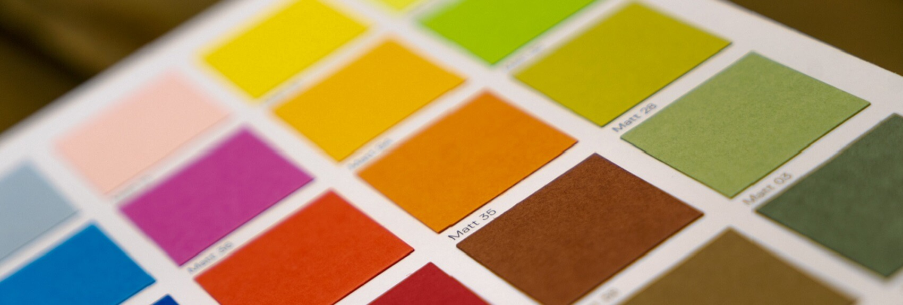
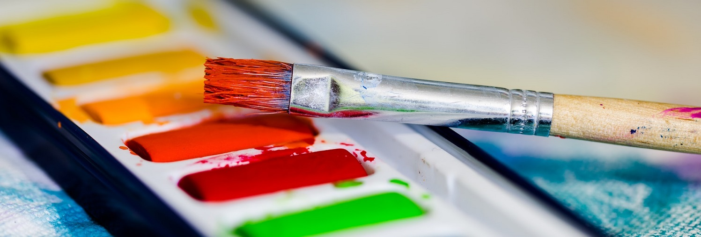
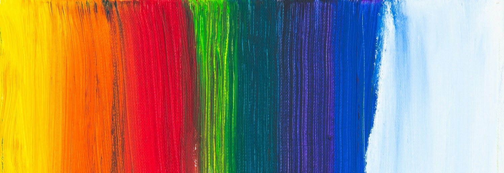

BLOG
Read my latest posts, and gain more insight on art.

35+ Free Printable Art Themed Stickers
August 4, 2021 | By Inaas Asad
Just like the title suggests, you can find dozens of art themed stickers free to download on this page! To get access to the stickers, all you must do is print...

Best Free Apps and Websites for Artists and Designers
August 2, 2021 | By Inaas Asad
Everybody loves free stuff, so I hope you don’t get bored reading this post. The web is flooded with tons of tools that artists and designers can utilize...

10 Amazing Summer Themed Color Palettes
July 27, 2021 | By Inaas Asad
A lot of designers and artists use color palettes in their work, as they are essential to the composition and balance of a piece. While I was...

Amazing Websites for Graphic and Web Design Inspiration
September 5, 2020 | By Inaas Asad
If you're having a designer's block, you should definitely read this post. I find inspiration in myself. Just kidding...

10 Hacks Every Beginner Painter Should Know
August 10, 2020 | By Inaas Asad
Who doesn't love hacks? The internet is full of them. I've compiled a list of ten hacks that I use all the time while creating art. They should help out...

Terrific Bucket List Ideas for Artists
August 7, 2020 | By Inaas Asad
Creating a bucket list and focusing on it can have incredible impacts on your life. When you set your goals, it helps you articulate what you want to explore...

The Basics of Color Theory
July 7, 2020 | By Inaas Asad
Colors are an essential component of any art piece. Color theory knowledge is a must for anyone that aspires to be a successful artist. It refers to the various ways of blending colors and under...

100 Painting Ideas for when You are Completely Blank
June 4, 2020 | By Inaas Asad
Can't think of a single idea to convert into a painting? Fear not, for you've come to the right place. We've all been there. You're sitting in front of your...